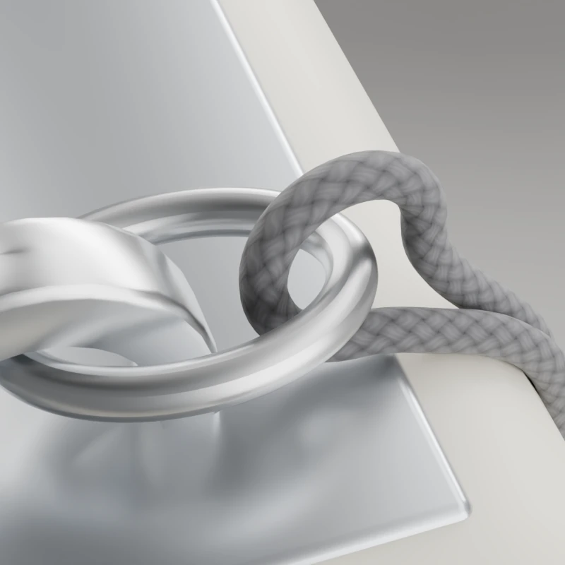
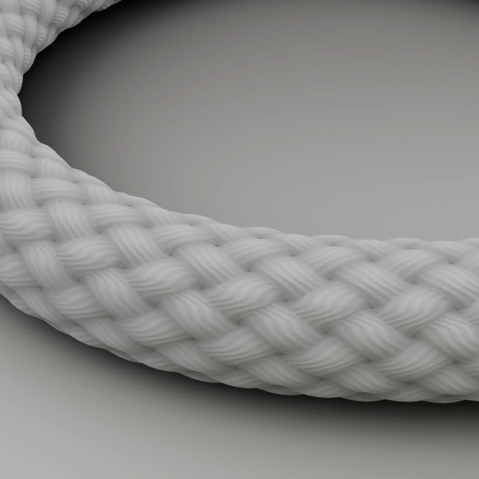

Hard-surface modeling / Sound
Pocket Player.
Drag to orbit. Scroll or pinch to zoom.
Press a colored button to use the player.
On the device
Soft Circuit
Original portfolio loop
StoppedVolume 60%
Send me your
current playlist.
Add a song from your device
Local songs are available in this tab for this visit.
Playlist credits · new current
Curated by Navdeep Singh. Track titles and uploader channels from the public YouTube playlist feed.
Material details
A closer look.
Metal hardware, a woven strap, and molded controls seen in the original studio renders.

